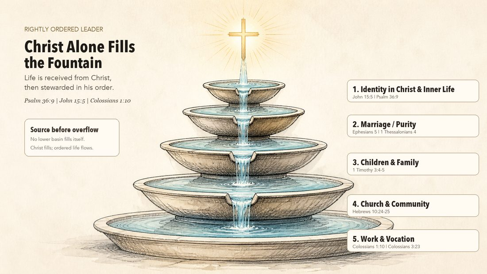

Rightly Ordered — For Disciples
A 15-week youth ministry curriculum for youth leaders, pastors, and parents deciding whether this belongs in their church.
Every student in your youth group is being formed by something. Left alone, it's the surrounding culture — absorbed by default and mistaken for common sense by the time it's load-bearing. Rightly Ordered — For Disciples trains students to tell the difference between a conviction that came from Scripture and a norm they picked up without noticing, then take the norm off.
It's the same Rightly Ordered Leader framework PathLight teaches adults, re-illustrated for high school life: ordinary friend groups, family, phones and social media, dating — not borrowed from an adult or professional setting.

The Fountain
Christ at the source, flowing out through identity and the inner life, marriage and purity, family, church and community, and into calling and the future. Order that starts on the inside and works its way out — every week of this course sits somewhere on that flow.
What a Ministry Receives
Per-week theme, Scripture, word study, Look Up / Look In / Look Out teaching flow, discussion questions, small-group time, an explicit leader guardrail, workbook cross-reference, and a closing Biblical Feedback Reference appendix — everything a volunteer leader needs to run the week.
A take-home book each student keeps: a page per week with the verse, a word-to-know box, a key line, reflection questions with write-in space, a peer-feedback box, and a weekly commitment line — plus a condensed Biblical Feedback Reference card.
A short overview you can hand to elders, parents, or a youth team considering the course — the problem it addresses, the framework, what's included, and the format at a glance.
Week by Week
An opener, a dedicated feedback-training week, two sessions per stage of the Fountain — a teaching week and an application week — a mid-series reflective checkpoint, and a closing commissioning week.
The opener — why a rightly ordered life starts with Christ, not willpower. 1 Corinthians 14:33
A dedicated skills day: why feedback must be Scripture-anchored, not opinion-based, and the group's first live practice round. Proverbs 27:17; Ephesians 4:15; Hebrews 10:24–25; Proverbs 15:31–32
What it looks like to try to fill your life from anywhere but Christ. Psalm 36:9; John 15:5
Teaching + application — who a student is before anything they do or achieve. Genesis 1:27; Ephesians 2:10; Matthew 11:28–30
Teaching + application — dating, self-control, and relationships ordered toward God rather than culture. 1 Thessalonians 4:3; 1 Corinthians 9:27
Teaching + application — honoring parents and the family God placed a student in, whatever its shape. Ephesians 6:1–3; Galatians 5:22–23
Teaching + application — why formation happens inside a body, not alone. Hebrews 10:24–25; Philippians 2:3–5
Teaching + application — work, vocation, and stewardship as worship, not just a career plan. Colossians 3:23; Colossians 1:10; 1 Peter 4:10
A reflective checkpoint, with no forced disclosure. Psalm 139:23–24
The closer and commissioning week. Ecclesiastes 3:11; Joshua 24:15
How each week runs
Look Up (the text), Look In (reflection), Look Out (application) — then Together as a full group into Feedback Triads, small groups of two or three giving and receiving feedback anchored in Scripture, not opinion. Week 2 trains the whole group in this before it's used every week after.
Why It Matters
A norm absorbed is not a conviction earned
Scripture doesn't call students to withdraw from their culture, and it doesn't call them to blend into it (Romans 12:2). It describes a third way: called out, while still in it. The first thing any group has to learn is how to tell the difference.
Feedback that answers to Scripture, not to the room
A youth group that meets every week can quietly become one more culture to conform to. That's why this course trains one specific habit: when someone says "we don't do that here," the next question is where Scripture says it. Iron only sharpens iron when the edge is Scripture, not opinion.
Every sphere of a student's life, not one topic
Identity, purity, family, church, calling — Scripture speaks to all of it, not just the Sunday-night slice. The Fountain runs through all of them on purpose.
For the Adults Who Lead It
This course doesn't just form the students sitting in the circle. Running it — preparing a week, giving feedback inside a Feedback Triad, correcting gently and being corrected in return — forms the small-group leader doing it just as much.
"All Scripture is God-breathed and profitable for teaching, for reproof, for correction, for training in righteousness" (2 Timothy 3:16–17). That's not a youth-ministry-specific skill. A leader who learns to teach, correct, and train from Scripture here is building the same muscle a small-group leader, a Sunday school teacher, or any other leader in the church needs — at any age, in any setting.
If your church is thinking about how to raise up small-group and ministry leaders more broadly — not just for youth — PathLight builds purpose-built Rightly Ordered formats for that too, rather than handing over something made for someone else.
Status
Curriculum under revision for a supervised first pilot. Grounded in Scripture and submitted to careful interpretation, not proven by a market test — this is a first offering, built to run with a real group and revised as it's used.